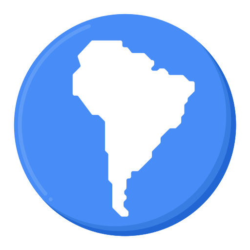
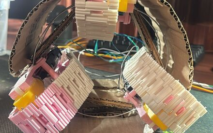
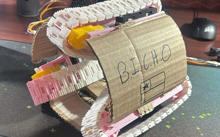
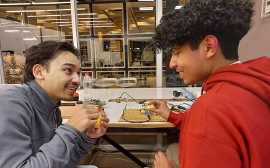
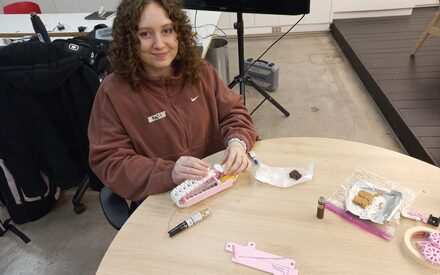
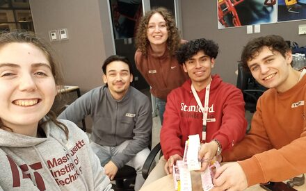

Facultad de Ingeniería · Universidad del Desarrollo
 Chile
Chile
Chile
El primer y único
equipo sudamericano
de la competencia
Somos UDD Tunnel Lab: 80 estudiantes y profesores de todas las carreras diseñando, fabricando y probando una tuneladora a escala funcional para competir en la Not-a-Boring Competition en Bastrop, Texas.
Proyecto en etapa preliminar.
Primer boceto de la máquina en camino a los organizadores.
Cuenta atrás · Texas 2027
Deadline de entrega
FEB 2027 · BASTROP, TX
—
días
—
horas
—
min
—
seg
Primera reunión general · Ago 2026
80
estudiantes inscritos de todas las carreras
6
subsistemas en desarrollo paralelo
1º

y único equipo sudamericano en la competencia
7
disciplinas involucradas, de geología a informática
Proyecto oficial de la Facultad de Ingeniería de la Universidad del Desarrollo.
Diseñado y fabricado en Chile, con industria y talento local.
Representando a Sudamérica en una competencia global de ingeniería.
01 · La competencia
Un desafío mundial para acelerar la tecnología subterránea.
La Not-a-Boring Competition es organizada por The Boring Company y desafía a equipos universitarios de todo el mundo a construir máquinas tuneladoras capaces de excavar más rápido, más seguro y más barato. El lema lo dice todo: beat the snail — superar a un caracol.
Los equipos trabajan durante el año en diseño, fabricación y pruebas, y luego compiten presencialmente en Bastrop, Texas. Se evalúa avance de excavación, diseño, innovación, seguridad, navegación y desempeño del sistema completo.
UDD Tunnel Lab es un proyecto independiente de la Universidad del Desarrollo. No es patrocinado ni respaldado por The Boring Company.
FASE 01
Diseñar
Subsistemas reales de una tuneladora experimental: corte, propulsión, extracción, control.
FASE 02
Fabricar
Prototipos, mecanismos y componentes testeables, con industria chilena como aliada.
FASE 03
Competir
Representando a la UDD, a Chile y a Sudamérica en un desafío global de ingeniería.
02 · Nuestra propuesta
B.I.C.H.O
BIG INTELLIGENT CHILEAN HOLE OPENER
Una micro-tuneladora modular, instrumentada y testeable. Hoy estamos en etapa preliminar: evaluando arquitecturas y preparando el primer boceto formal para presentarlo a los organizadores de la competencia.
Cada subsistema es un frente de trabajo abierto: un equipo de estudiantes, un profesor guía y —cuando la ingeniería lo pide— una empresa aliada aportando conocimiento, componentes o fabricación.
Ver estado de cada subsistema[ RENDER / CAD DE LA MÁQUINA ]
arrastra aquí el boceto de B.I.C.H.O
[ FOTO TALLER ]
[ DIAGRAMA CABEZAL ]
03 · Avances del proyecto
Todo el proyecto, a la vista.
Completado
Convocatoria
50 estudiantes inscritos e identidad del equipo definida.
En curso
Diseño preliminar
Arquitectura por subsistemas y primer boceto para los organizadores.
Bloqueado · falta financiamiento
Fabricación
Mecanizado, estructura y componentes. Aquí entran nuestros socios.
Planificado
Pruebas en terreno
Excavación controlada, navegación y validación del sistema completo.
Planificado
Texas
Traslado del prototipo y competencia presencial en Bastrop.
Cabezal erosionador
35%Investigación de mecanismos de corte4 personas
Propulsión e hidráulica
25%Dimensionamiento de empuje5 personas
Extracción de material
15%Buscando asesoría de industria3 personas
Estructura y casing
30%Layout modular en evaluación6 personas
Control y navegación
20%Selección de sensores e instrumentación7 personas
Software y simulación
40%Telemetría y visualización de datos5 personas
2026 · AGO#006 · PROTOTIPO
Primeros prototipos de tracción a escala
Construimos y probamos los primeros módulos de oruga a escala para validar el sistema de tracción antes de pasar al diseño a tamaño real.

2026 · AGO#005 · PROTOTIPO
Nacen B.I.C.H.O y MARK-O
Los dos primeros prototipos rodantes del equipo, construidos para iterar rápido sobre el sistema de tracción antes de comprometer diseño final.

2026 · AGO#004 · DISEÑO
Primer boceto de B.I.C.H.O en preparación
Consolidamos las propuestas de arquitectura de los equipos en un único boceto para presentar a los organizadores de la competencia.

2026 · AGO#003 · EQUIPO
Se forman los 6 frentes de trabajo
Cada subsistema queda con un equipo de estudiantes y un profesor guía. Empieza la investigación técnica en paralelo.

2026 · JUL#002 · COMUNIDAD
50 estudiantes se inscriben al proyecto
La convocatoria abierta a todas las carreras cierra con 50 inscritos: ingeniería, minería, geología, obras civiles, industrial e informática.

2026 · JUL#001 · HITO
Nace UDD Tunnel Lab
La Facultad de Ingeniería impulsa el equipo y define su identidad: UDD Tunnel Lab, con B.I.C.H.O como nombre de la máquina.
[ FOTO ]
04 · Socios del proyecto
No buscamos un logo en una polera. Buscamos socios de ingeniería.
Una empresa puede financiar un subsistema completo, aportar materiales, mecanizado, software, sensores, asesoría técnica, campo de pruebas o logística hacia Texas. En cambio obtiene contacto temprano con talento, un desafío técnico real donde probar sus capacidades y presencia en un proyecto chileno con proyección internacional.
Talento
Contacto temprano con 80 estudiantes de 7 disciplinas.
Innovación
Un banco de pruebas real para tecnología, componentes y software.
Visibilidad
Presencia en la máquina, la bitácora, los hitos y el viaje a Texas.
Vinculación
Relación directa con la Facultad de Ingeniería UDD y su ecosistema.
06 · Únete al equipo
No necesitas experiencia.
Necesitas ganas.
Buscamos estudiantes de todas las carreras y todos los años: diseño, fabricación, control, geología, gestión, comunicaciones y búsqueda de sponsors. Hay tareas para cada nivel.
Inscribirme al equipo →
Formulario oficial de Ingeniería UDD.
Dudas: pablo.ortiz@udd.cl
Dudas: pablo.ortiz@udd.cl
07 · Contacto
Conversemos.
Empresas, mentores, laboratorios, medios y estudiantes: escríbenos y contamos cómo puedes ser parte.
pablo.ortiz@udd.cl
Facultad de Ingeniería · Universidad del Desarrollo
Santiago · Chile
Facultad de Ingeniería · Universidad del Desarrollo
Santiago · Chile